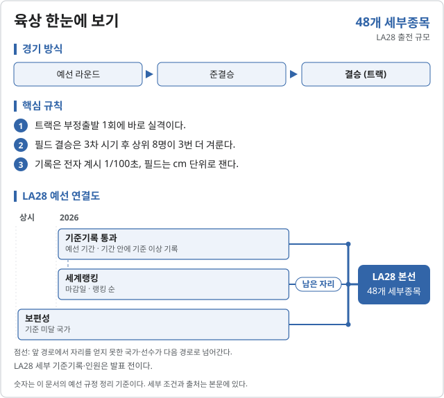
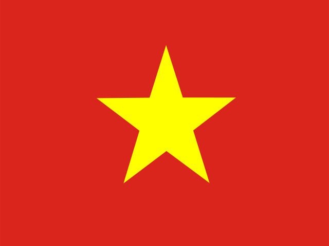

육상 (Athletics)
2028 LA 올림픽 육상에는 48개 세부종목이 있다.
- 남자 100m · 200m · 400m · 800m · 1500m · 5000m · 10000m · 110m 허들 · 400m 허들 · 3000m 장애물 · 4×100m 계주 · 4×400m 계주 · 마라톤 · 하프마라톤 경보 · 높이뛰기 · 장대높이뛰기 · 멀리뛰기 · 세단뛰기 · 포환던지기 · 원반던지기 · 해머던지기 · 창던지기 · 10종경기
- 여자 100m · 200m · 400m · 800m · 1500m · 5000m · 10000m · 100m 허들 · 400m 허들 · 3000m 장애물 · 4×100m 계주 · 4×400m 계주 · 마라톤 · 하프마라톤 경보 · 높이뛰기 · 장대높이뛰기 · 멀리뛰기 · 세단뛰기 · 포환던지기 · 원반던지기 · 해머던지기 · 창던지기 · 7종경기
- 혼성 4×100m 계주 · 4×400m 계주

2026 주요 대회 결과 2026-11-07 05:34 KST
위키백과 대회 문서에서 자동으로 모은다. 대회 중에는 한 시간마다 새로 읽는다. 한국 선수가 있는 줄은 붉게 칠했다. 하계 실시간 전체 →
아이치·나고야 아시안게임 아이치·나고야 · 09.23~09.29 종료 결과 50/50종목 · 한국 금0 은0 동3
| 종목 | 금 | 은 | 동 |
|---|---|---|---|
| 남자 events | |||
| 100m | |||
| 200m | |||
| 400m | |||
| 800m | |||
| 1500m | |||
| 5000m | |||
| 10,000m | Birhanu Balew BHR 28:27.51 | Albert Rop BHR 28:34.38 | |
| 110m hurdles | |||
| 400m hurdles | |||
| 3000m steeplechase | |||
| 4 × 100m relay | |||
| 4 × 400m relay | |||
| Marathon | |||
| Half marathon race walk | |||
| Marathon race walk | |||
| High jump | |||
| Pole 도마 | |||
| Long jump | |||
| Triple jump | |||
| Shot put | |||
| Discus throw | |||
| Hammer throw | |||
| Javelin throw | |||
| Decathlon | |||
| 여자 events | |||
| 100m | |||
| 200m | |||
| 400m | |||
| 800m | |||
| 1500m | |||
| 5000m | |||
| 10,000m | |||
| 100m hurdles | |||
| 400m hurdles | |||
| 3000m steeplechase | |||
| 4 × 100m relay | |||
| 4 × 400m relay | |||
| Marathon | |||
| Half marathon race walk | |||
| Marathon race walk | |||
| High jump | |||
| Pole 도마 | |||
| Long jump | |||
| Triple jump | |||
| Shot put | |||
| Discus throw | |||
| Hammer throw | |||
| Javelin throw | |||
| Heptathlon | |||
| 혼성 events | |||
| 4 × 100m relay | |||
| 4 × 400m relay |  Nguyễn Thị Ngọc·Quách Thị Lan·Tạ Ngọc Tưởng·Lê Ngọc Phúc 베트남 3:14.54 | ||
메달 순위:  중국 17-14-8 ·
중국 17-14-8 ·  일본 10-12-10 ·
일본 10-12-10 ·  바레인 9-2-2 ·
바레인 9-2-2 ·  태국 3-2-1 ·
태국 3-2-1 ·  우즈베키스탄 3-0-1 ·
우즈베키스탄 3-0-1 ·  인도 1-9-14 ·
인도 1-9-14 ·  이란 1-2-1 ·
이란 1-2-1 ·  카타르 1-1-1 ·
카타르 1-1-1 ·  대한민국 0-0-3
대한민국 0-0-3
출처: 위키백과 Athletics at the 2026 Asian Games · 2026-11-06 22:37 읽음
예선 규정
LA28 예선 자료
LA28의 세부 기준기록과 예선 규정은 공식 최신 문서 확인 후 반영합니다. 2027 베이징 세계선수권 기준을 올림픽 기준으로 대신 적용하지 않습니다.
육상 · 올림픽예선 | 규정 확인 2026.10.04 · 한국 전망 기준 2026.10.04
예선 일정
| 기간 | 대회 | 장소 | 배정 쿼터 | 결과 |
|---|
직전 올림픽 메달리스트
2024 파리 올림픽
| 세부종목 | 금 | 은 | 동 |
|---|---|---|---|
| 남자 100m | Noah Lyles (USA) | Kishane Thompson (JAM) | Fred Kerley (USA) |
| 남자 200m | Letsile Tebogo (BOT) | Kenny Bednarek (USA) | Noah Lyles (USA) |
| 남자 400m | Quincy Hall (USA) | Matthew Hudson-Smith (GBR) | Muzala Samukonga (ZAM) |
| 남자 800m | Emmanuel Wanyonyi (KEN) | Marco Arop (CAN) | Djamel Sedjati (ALG) |
| 남자 1500m | Cole Hocker (USA) | Josh Kerr (GBR) | Yared Nuguse (USA) |
| 남자 5000m | Jakob Ingebrigtsen (NOR) | Ronald Kwemoi (KEN) | Grant Fisher (USA) |
| 남자 10000m | Joshua Cheptegei (UGA) | Berihu Aregawi (ETH) | Grant Fisher (USA) |
| 남자 110m 허들 | Grant Holloway (USA) | Daniel Roberts (USA) | Rasheed Broadbell (JAM) |
| 남자 400m 허들 | Rai Benjamin (USA) | Karsten Warholm (NOR) | Alison dos Santos (BRA) |
| 남자 3000m 장애물 | Soufiane El Bakkali (MAR) | Kenneth Rooks (USA) | Abraham Kibiwot (KEN) |
| 남자 4×100m 계주 | CAN | RSA | GBR |
| 남자 4×400m 계주 | USA | BOT | GBR |
| 남자 마라톤 | Tamirat Tola (ETH) | Bashir Abdi (BEL) | Benson Kipruto (KEN) |
| 남자 20km 경보 | Brian Pintado (ECU) | Caio Bonfim (BRA) | Álvaro Martín (ESP) |
| 남자 하프마라톤 경보 | 신설 | ||
| 남자 높이뛰기 | Hamish Kerr (NZL) | Shelby McEwen (USA) | Mutaz Barsham (QAT) |
| 남자 장대높이뛰기 | Armand Duplantis (SWE) | Sam Kendricks (USA) | Emmanouil Karalis (GRE) |
| 남자 멀리뛰기 | Miltiadis Tentoglou (GRE) | Wayne Pinnock (JAM) | Mattia Furlani (ITA) |
| 남자 세단뛰기 | Jordan Díaz (ESP) | Pedro Pichardo (POR) | Andy Díaz (ITA) |
| 남자 포환던지기 | Ryan Crouser (USA) | Joe Kovacs (USA) | Rajindra Campbell (JAM) |
| 남자 원반던지기 | Rojé Stona (JAM) | Mykolas Alekna (LTU) | Matthew Denny (AUS) |
| 남자 해머던지기 | Ethan Katzberg (CAN) | Bence Halász (HUN) | Mykhaylo Kokhan (UKR) |
| 남자 창던지기 | Arshad Nadeem (PAK) | Neeraj Chopra (IND) | Anderson Peters (GRN) |
| 남자 10종경기 | Markus Rooth (NOR) | Leo Neugebauer (GER) | Lindon Victor (GRN) |
| 여자 100m | Julien Alfred (LCA) | Sha'Carri Richardson (USA) | Melissa Jefferson (USA) |
| 여자 200m | Gabby Thomas (USA) | Julien Alfred (LCA) | Brittany Brown (USA) |
| 여자 400m | Marileidy Paulino (DOM) | Salwa Eid Naser (BHR) | Natalia Kaczmarek (POL) |
| 여자 800m | Keely Hodgkinson (GBR) | Tsige Duguma (ETH) | Mary Moraa (KEN) |
| 여자 1500m | Faith Kipyegon (KEN) | Jessica Hull (AUS) | Georgia Bell (GBR) |
| 여자 5000m | Beatrice Chebet (KEN) | Faith Kipyegon (KEN) | Sifan Hassan (NED) |
| 여자 10000m | Beatrice Chebet (KEN) | Nadia Battocletti (ITA) | Sifan Hassan (NED) |
| 여자 100m 허들 | Masai Russell (USA) | Cyréna Samba-Mayela (FRA) | Jasmine Camacho-Quinn (PUR) |
| 여자 400m 허들 | Sydney McLaughlin-Levrone (USA) | Anna Cockrell (USA) | Femke Bol (NED) |
| 여자 3000m 장애물 | Winfred Yavi (BRN) | Peruth Chemutai (UGA) | Faith Cherotich (KEN) |
| 여자 4×100m 계주 | USA | GBR | GER |
| 여자 4×400m 계주 | USA | NED | GBR |
| 여자 마라톤 | Sifan Hassan (NED) | Tigst Assefa (ETH) | Hellen Obiri (KEN) |
| 여자 20km 경보 | Yang Jiayu (CHN) | María Pérez (ESP) | Jemima Montag (AUS) |
| 여자 하프마라톤 경보 | 신설 | ||
| 여자 높이뛰기 | Yaroslava Mahuchikh (UKR) | Nicola Olyslagers (AUS) | Eleanor Patterson (AUS) / Iryna Herashchenko (UKR) |
| 여자 장대높이뛰기 | Nina Kennedy (AUS) | Katie Moon (USA) | Alysha Newman (CAN) |
| 여자 멀리뛰기 | Tara Davis-Woodhall (USA) | Malaika Mihambo (GER) | Jasmine Moore (USA) |
| 여자 세단뛰기 | Thea LaFond (DMA) | Shanieka Ricketts (JAM) | Jasmine Moore (USA) |
| 여자 포환던지기 | Yemisi Ogunleye (GER) | Maddi Wesche (NZL) | Song Jiayuan (CHN) |
| 여자 원반던지기 | Valarie Allman (USA) | Feng Bin (CHN) | Sandra Elkasević (CRO) |
| 여자 해머던지기 | Camryn Rogers (CAN) | Annette Echikunwoke (USA) | Zhao Jie (CHN) |
| 여자 창던지기 | Haruka Kitaguchi (JPN) | Jo-Ane van Dyk (RSA) | Nikola Ogrodníková (CZE) |
| 여자 7종경기 | Nafissatou Thiam (BEL) | Katarina Johnson-Thompson (GBR) | Noor Vidts (BEL) |
| 혼성 4×100m 계주 | 신설 | ||
| 혼성 4×400m 계주 | NED | USA | GBR |
| 혼성 마라톤 경보 계주 | Álvaro Martín·María Pérez (ESP) | Brian Pintado·Glenda Morejón (ECU) | Rhydian Cowley·Jemima Montag (AUS) |
링크 없는 행은 LA28에 없는 파리 2024 세부종목이다. 출처: Wikipedia 각 종목 2024 하계 올림픽 메달 표.
대한민국
한국 선수
| 종목 | 선수 문서 |
|---|---|
| 높이뛰기 | 우상혁 |
| 세단뛰기 | 김장우·유규민 |
| 단거리 | 조엘진·비웨사 |
| 중거리 | 이재웅 |
| 투포환 | 박시훈 |